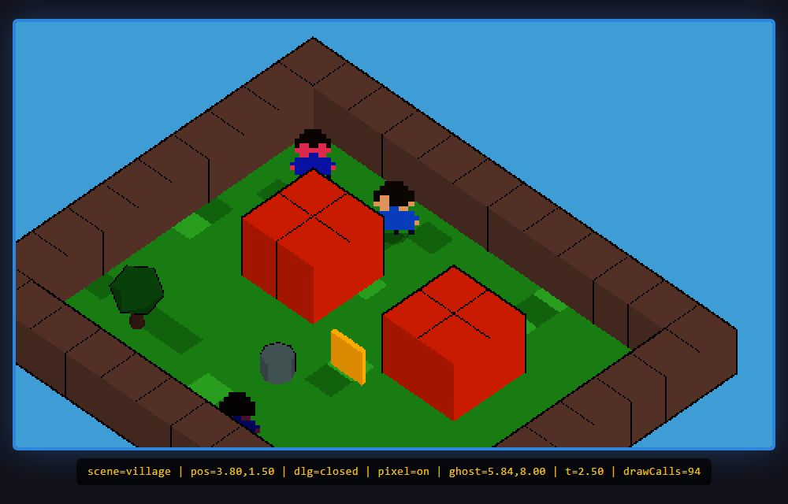
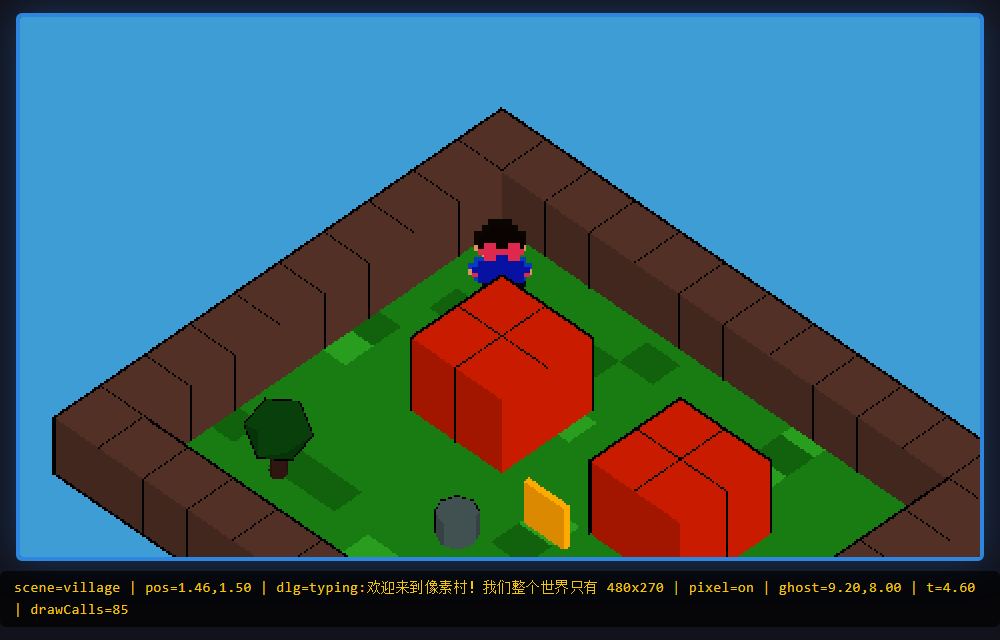
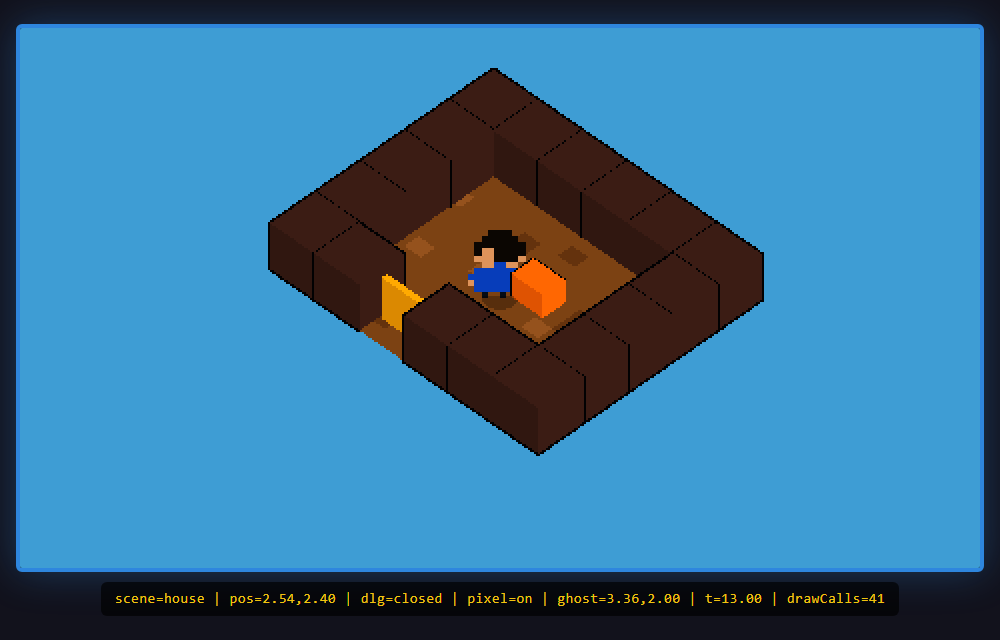
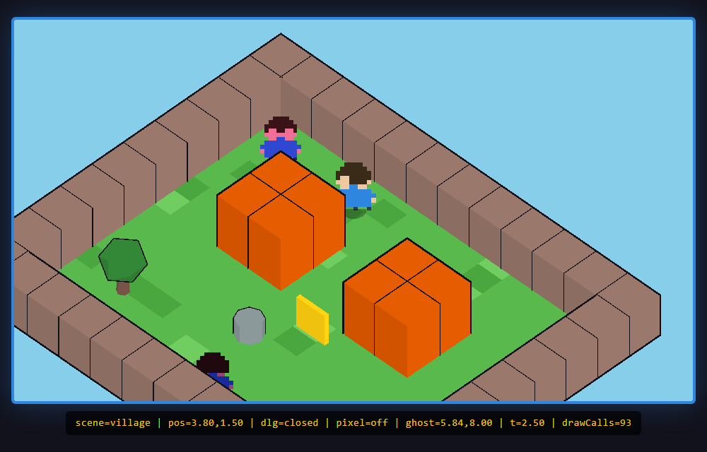

你平时开的网页是文档：标题、段落、图片，浏览器负责排版。而那种"像游戏的网站"里，屏幕上每一帧都是现场画出来的——人物、房子、光影，每秒画 60 次，还能响应键盘实时变化。这就不叫"排版"了，叫渲染循环。
判断一个网站是不是"游戏级"，看三件事：①有没有主循环（requestAnimationFrame 每帧重画）；②有没有摄像机（视角可以移动）；③有没有玩法状态（位置、对话、场景这些存在内存里、随时变的数据）。三者都有，它本质上就是一个跑在浏览器里的游戏，只是网址看起来像普通网站。
推文第 1 点："用 Three.js 或者 WebGL 来作为整个世界的三维引擎"。原因三条：
| Three.js / WebGL | Unity / Unreal | |
|---|---|---|
| 打开方式 | 网址一点就进，0 安装 | 要下载安装包（几百 MB 起） |
| 产物体积 | 代码即资产，可以压到十几 MB | 引擎运行时本身就不小 |
| 和网页的融合 | 就是网页的一部分（canvas 标签） | 导出 WebAssembly，加载慢 |
"网站 0 加载"的体验只有浏览器原生技术给得起——这也是那个爆火网站的杀手锏。Three.js 是 WebGL 的"说人话封装"：WebGL 是浏览器暴露的底层画 3D 的接口（要手写着色器、缓冲区），Three.js 把它包成"场景、相机、灯光、盒子"这些好懂的对象。
Three.js 里，整个世界就是一棵场景图（Scene Graph）树：根是 Scene，下面挂地板、墙、树、人物……每个节点有自己的位置/旋转/缩放，父节点动，孩子跟着动。我们在复现 demo 里就是这么组织的：
这里埋了一个复现时才想得通的关键设计："切换场景"就是"把这棵子树从 Scene 上摘下来、把另一棵挂上去"——玩法状态（逻辑.js）和渲染资产（场景图）分开管，切换时只动挂载点，两边的代码都不用改。这正好是 vault 里已学过的 [[Three.js与场景图]] 的实战应用。
日式 RPG 那种"斜上往下看、左右有纵深"的画面，机位秘诀就一句话：正交相机（OrthographicCamera）从斜上方看下去。复现 demo 里的真实代码只有三行：
两个选择各有含义：①为什么正交不用透视？透视相机"近大远小"，正交相机"多远都一样大"——像素游戏要的就是那种平面剪纸感；②为什么是 1 : 1.35 : 1？这个比例决定俯视角度，调小更平视、调大更俯视，纯手感参数。
-1.3，相机钻到了地面下面——画面上地板凭空消失（背面剔除），只剩几个黑块，天空蓝铺满全屏。靠"把背景临时改红再截图取色"才定位到：原来那片"地面"是透过缺失的地板看到的天空。教训：3D 画面诡异时，先怀疑相机在哪一侧。每帧执行的一条链：读输入 → 算速度 → 乘时间得位移 → 碰撞检查 → 更新位置。看起来平凡，有两个非显然的细节：
细节一：位移要乘 dt（这一帧的时长），不能每帧固定走一步。否则 120Hz 屏幕上人物跑得是 60Hz 屏幕的两倍——复现 demo 用固定时间步 1/60 秒推进模拟，画面帧率再乱，世界速度恒定。
细节二：撞墙要"贴墙滑行"，不能"原地卡死"。做法是轴分离：先只动 X 方向、撞了就钳到贴墙位置，再单独动 Z 方向。斜着撞墙时，被挡的那根轴停住，另一根轴照走——人就顺着墙滑过去了。这是我们复现 demo 碰撞模块（logic.js）的核心，26 行：
像素感不是贴图自带的，是三件事叠加的系统效果：
| 手段 | 原理 | demo 里的实现 |
|---|---|---|
| ① 低分辨率渲染 | 先画到一张 480×270 的小画布（渲染目标 RT）上，细节天然就少 | WebGLRenderTarget(480,270) |
| ② 最近邻放大 | 放大时不做平滑插值，一个像素直接变成一大块，硬边出现 | magFilter = NearestFilter |
| ③ CSS 再放大 | 页面上的 <canvas> 用 image-rendering: pixelated 拉伸到全屏 | 一行 CSS |
缺一件就"露馅"：只做①不做②，放大时 GPU 自动双线性插值，像素边缘发糊；只做②不做①，细节太多不像老游戏。"低分辨率 + 不插值放大"这对组合才是像素风的化学本质。

推文第 4 点原话："要自己写一个日式 RPG 风格的 shader"。拆开是两个经典技法：
① Cel shading（赛璐璐/卡通着色）：真实光照是连续渐变的，卡通着色把明暗量化成 2~3 档——亮部一档色、暗部一档色，中间没有过渡。Three.js 内置 MeshToonMaterial，喂给它一张 3 像素宽的"梯度图"（比如 90/170/255 三档灰）就是现成的日式分档光。
② 描边（Outline）：每个物体套一个"反转壳"——同一个模型放大 5%、把材质改成只画背面、纯黑。正面被原模型挡住看不见，露出来的"背面边缘"就是一圈描边。三行代码，效果拔群。
RPG 对话框的行为：按键打开 → 文字一个个蹦出来（打字机）→ 按键跳过打字 → 按键翻下一句 → 最后一句后关闭。任何时刻它只可能处于三种状态之一：closed / typing / waiting，按键只在特定状态下有效——这就是有限状态机（FSM）。
写成状态机的好处：所有非法操作天然不存在（closed 时按 advance 直接返回 false），不会出现"打字到一半翻页翻出数组越界"这种 bug。我们 logic.js 里的 DialogueFSM 一共 40 行，Node 侧 8 项断言全覆盖（含"打字 0.1 秒 @20 字/秒 = 恰好 2 个字"这种边界）。

走进门 → 屏幕压黑再亮起 → 人已在另一个世界里。拆成三步：
①触发：每帧查玩家脚下的地图格子，是门（'D'）就发起；②过场：一个 0.6 秒的 fade 计时器，画面在最黑的那一刻才真正换；③执行：把村子子树从 Scene 摘下、把屋子子树挂上，再把玩家传送到新场景门旁。地图就是字符串数组（'#'=墙、'D'=门、'N'=NPC），查格子就是查二维数组，零成本。

推文里最让人惊叹的是原网站"全部体量 17MB、打开基本 0 加载"。拆开看，网页游戏要瘦身上游下游各三招：
| 资产侧（占体积 90%） | 工程侧 |
|---|---|
| 低分辨率贴图（16×16 就够，×最近邻放大） | 压缩纹理格式（GPU 直接解） |
| 低多边形建模（一个箱子 12 个三角 形） | Draco/meshopt 几何压缩 |
| 能程序生成就不用文件（贴图/模型代码现算） | 按需加载：进屋才下载屋子的东西 |
我们的复现 demo 走了极致路线：零外部美术资产——小人是 12×12 的字符画在 canvas 上现画、地面贴图是代码撒的随机斑点（带固定种子保证每次一样）、模型全是 Box/Cylinder 基本体。整个 demo 除 three.js 库外，资产体积 = 0 字节。"像三十年前 geek 抠内存做游戏"的当代版本，就是用代码换字节。
推文第 5 点很诚实："多人在线 idk，或许就是简单的人物位置同步吧"。它确实可以很简单，核心只有一句话：网络有延迟，所以别渲染"现在"，渲染"100 毫秒前"。
三步：①远端玩家每隔一小会发来"(时间, x, y)"；②本地维护一个样本队列；③渲染远端角色时，取 now − 延迟 那一刻的位置，在队列里找相邻两包做线性插值。这就是 NetSync 类的全部——我们的实现 25 行。为什么故意往回看 0.1s？因为最新位置的信息还在路上，回看能保证插值永远发生在"两个已收到的样本之间"，不会预测错。
三套验证全部真跑，零编造：
| 实验 | 内容 | 结果 |
|---|---|---|
① Node 逻辑测试node logic_test.mjs | 碰撞贴墙滑行/对话状态机/场景切换器/延迟插值 四模块 | 23 pass / 0 fail（首跑 8 fail，修出 1 真bug + 1 设计缺陷） |
② 无头 Edge 真渲染取证node verify.mjs | 确定性时间机器快进到 5 个关键帧，抓页面 HUD 状态 + GPU 截图比对 | 14 pass / 0 fail（行走位移/打字机中态/进屋/ghost 插值逐字命中理论值） |
| ③ 像素化 A/B 对照 | ?pixel=1（RT+最近邻）vs ?pixel=0（直渲），PIL 逐像素分析 | 两图均差 45.42/255，像素化版块状度更高（0.9475 > 0.9442） |

调试期踩坑收益最高的三个：①把场景对象误当 grid 传给碰撞函数——静止帧早退返回把 bug 藏了 60 帧，一动就炸；②相机方向 y 写负钻到地下——画面症状（"地板消失"）和病因（相机在地板下面）完全对不上号，靠改背景颜色截图取色才破案；③场景忘了加灯，Toon 材质全黑。3D 排错三板斧：改一个颜色、截一张图、取一个像素——比盯代码猜快十倍。